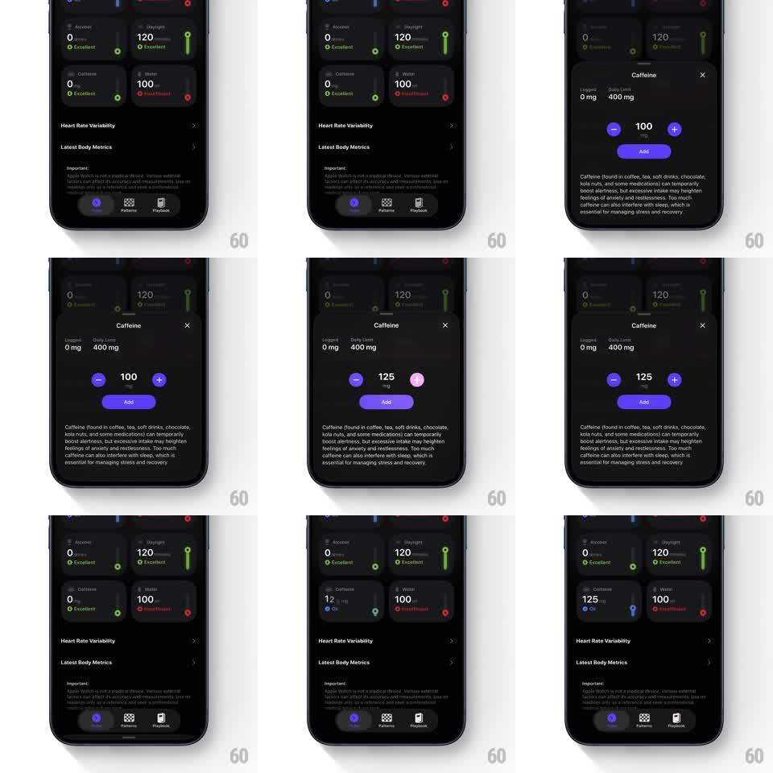

Media
Frame-by-frame

Rebuild this interaction 1:1: Harvee's caffeine logging - tapping the Caffeine card on the dark dashboard opens a bottom sheet with a mg stepper, and adding a dose updates the dashboard card's value and color status (Excellent green -> Ok blue) in one fluid return.

Rebuild this interaction 1:1: Harvee's caffeine logging - tapping the Caffeine card on the dark dashboard opens a bottom sheet with a mg stepper, and adding a dose updates the dashboard card's value and color status (Excellent green -> Ok blue) in one fluid return. ## Integration Integration: stack-agnostic spec - springs given as stiffness/damping, timed motions as duration + curve; map every value to your framework and animation library of choice. ## Scene Dark dashboard: a 2x2 grid of metric cards (Alcohol, Daylight, Caffeine, Water - each with a value, mg/unit, and a colored status label), Heart Rate Variability and Latest Body Metrics rows, and a bottom tab bar (Patterns, Playback). The Caffeine sheet shows logged/daily-limit values (0 mg / 400 mg), a large centered mg readout with minus/plus steppers, an "Add" button, and an explainer paragraph. ## Motion spec Pattern: sheet + stepper + status card update, ~900ms total. - Sheet: slides up with a spring (~340/26, ~400ms) over a dimming dashboard (200ms); the close (x) sits top-right. - Stepper: minus/plus taps jump the readout in 25 mg steps with a vertical digit roll (150ms); holding a stepper repeats with accelerating cadence. - Add: the sheet slides down (300ms, ease-in); the Caffeine card's value counts up (0 -> 125 mg, 500ms) and its status label and accent color cross-fade (Excellent green -> Ok blue, 300ms) with a soft card pulse (scale 1 -> 1.03 -> 1). ## Calibration - The card's color change is tied to the threshold, not the tap - it flips when the value crosses the level. - Other dashboard cards stay frozen; only Caffeine reacts. ## Reduced motion Sheet and value changes cross-fade (200ms); no pulses or rolls. ## Don't miss - Status colors are semantic per metric (green Excellent, blue Ok, red Excessive) - the Water card stays red in this flow. - The mg readout keeps "mg" small beneath the number.